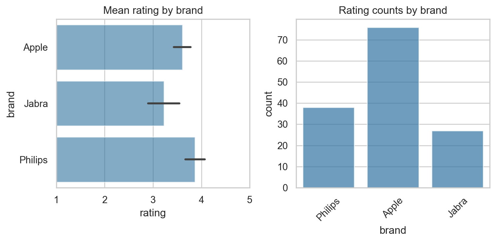
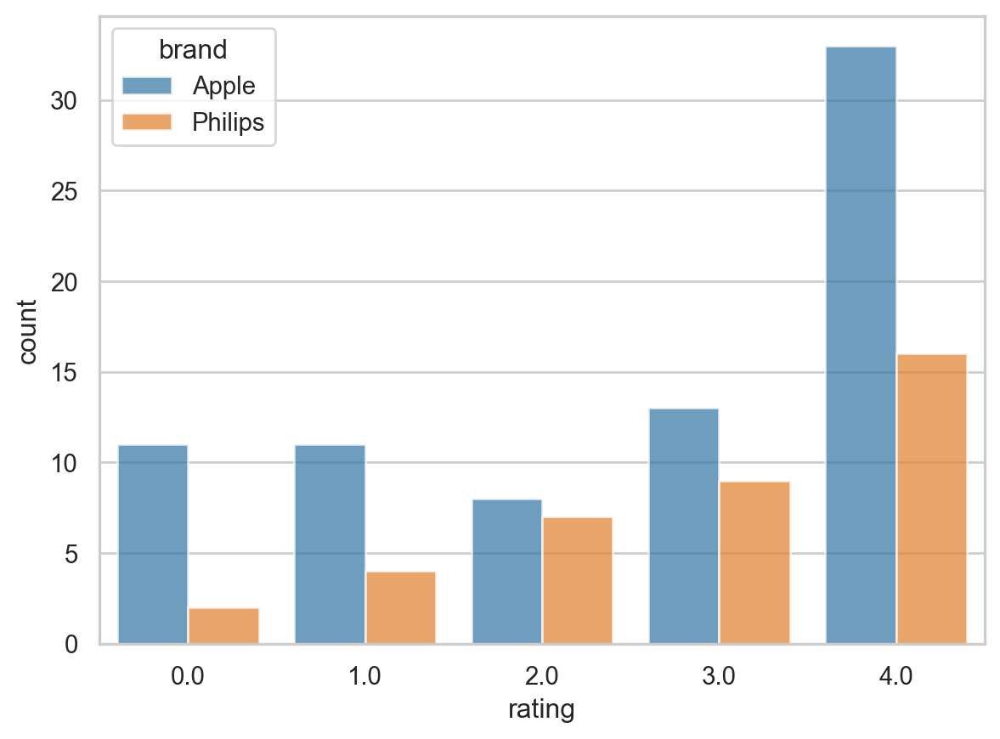
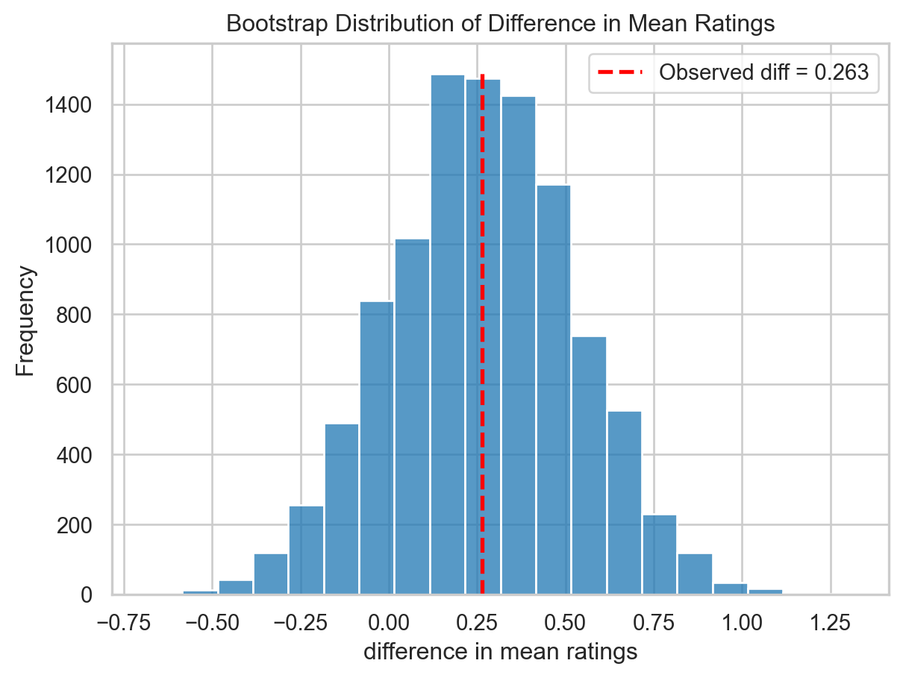
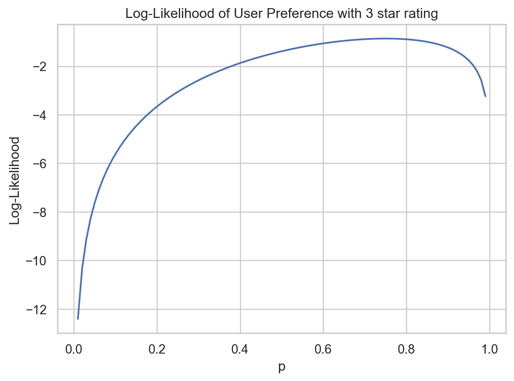
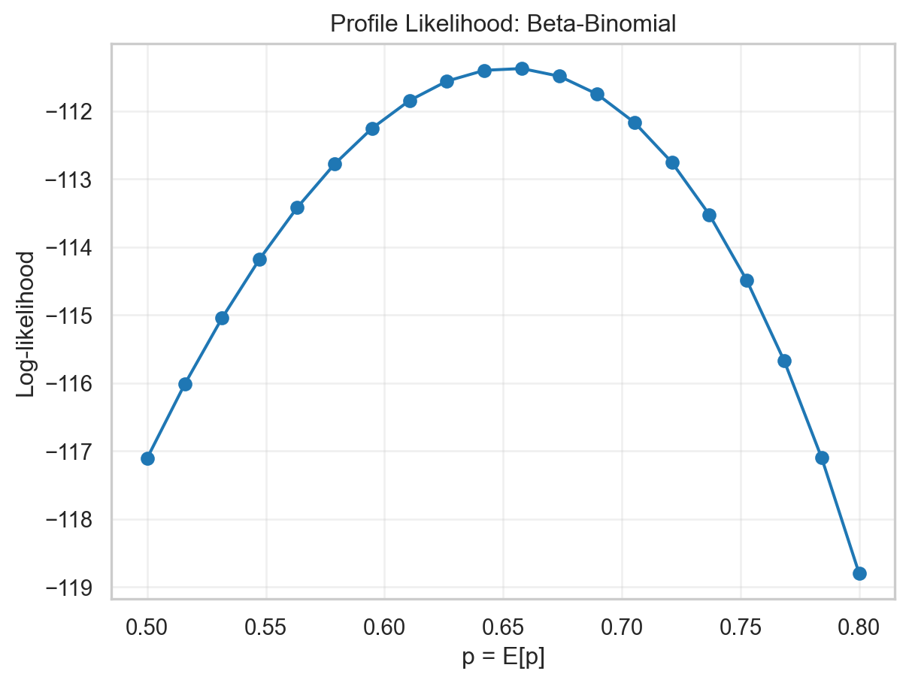
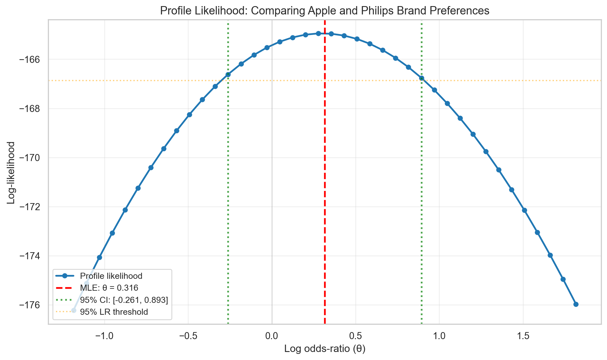

import seaborn as sns
import seaborn.objects as so
import numpy as np
import pandas as pd
from scipy.optimize import minimize, approx_fprime, minimize_scalar
from scipy import stats
from scipy.integrate import quad
import matplotlib.pyplot as plt
import warnings
from rfuns import *
from IPython.display import display
from seaborn import axes_style
theme_dict = {**axes_style("whitegrid")}
sns.set_theme(style="whitegrid", palette=None)
warnings.filterwarnings("ignore")Introduction
Product ratings are commonly used to assess brand preference, but summarizing and comparing ratings is challenging because user ratings reflect variability and randomness in individual user preferences. Some users are naturally generous raters while others are harsh. Traditional summary statistics like mean ratings ignore this heterogeneity which can lead to misleading conclusions.
Using electronics product rating dataset, this article first explores a simple bootstrap based rating comparison. The limitation of such a model are highlighted.
As an introduction to the proposed hierarchical model a beta-binomial model (Pawitan 2013) for a single brand is presented, that explicitly captures how individual user preferences vary, enabling estimation of the underlying distribution of rating propensity for a given brand.
Building on it, a richer model that capture variability in preferences for 2 brands simultaneously is developed. A reparameterisation using the log of odds-ratio enables direct modeling of the parameter of interest which is a comparative measure of favourability between the 2 brands. Throughout the study, the parameter choices are governed by considering likelihood profile and the values that maximise it.
Data
Electronics product rating dataset is used in the study. The dataset contains user ratings for various electronic products, with each rating on a scale from 1-5 (converted to 0-4). For this article a subset of Headphones in the data, from brands Philips and Apple is used. The study focuses on 1 particular product from each of these brands to make a comparative assessment.
ratings = (
pd.read_csv("ratings.csv")
.drop(["split", "user_attr"], axis=1)
.assign(rating=lambda x: x["rating"] - 1)
.query("item_id in (4501, 3700)")
)
display(ratings.sample(n=5, random_state=42))| item_id | user_id | rating | timestamp | model_attr | category | brand | year | |
|---|---|---|---|---|---|---|---|---|
| 3396 | 4501 | 443035 | 4.0 | 2015-04-10 | Female | Headphones | Apple | 2014 |
| 1764 | 3700 | 209184 | 4.0 | 2014-01-10 | Male | Headphones | Philips | 2014 |
| 2521 | 4501 | 312774 | 1.0 | 2014-09-28 | Female | Headphones | Apple | 2014 |
| 3105 | 4501 | 394621 | 4.0 | 2015-02-04 | Female | Headphones | Apple | 2014 |
| 2063 | 3700 | 252433 | 3.0 | 2014-05-13 | Male | Headphones | Philips | 2014 |
EDA
Average ratings for brands is close and it appears that there is some degree of variability in the ratings. This variability can hide true differences between brands.
There is visible overlap of standard errors and so at this point it is hard to say which brand is more favorably rated given the variability.
fig, ax = plt.subplots(1, 2, figsize=(8, 4))
_ = (
so.Plot(x="rating", y="brand", data=ratings)
.add(so.Bar(alpha=0.6), so.Agg())
.add(so.Range(), so.Est(errorbar="se"))
.label(title="Mean rating by brand")
.on(ax[0])
.plot()
)
_ = (
so.Plot(ratings, x="brand")
.add(so.Bar(alpha=0.6), so.Hist())
.label(y="count", title="Ratings count by brand")
.on(ax[1])
.plot()
)
fig.show()
The distribution of ratings for these brands has distinct patterns, while users seem to have more even views on Apple (commonly rate 0 to 3), Philips has a more favourable set of ratings with fewer 0 Stars proportionally.
so.Plot(ratings.astype({"rating": "category"}), x="rating", color="brand").add(
so.Bar(
alpha=0.6,
),
so.Hist(),
so.Dodge(),
).label(y="count").theme(theme_dict).limit(x=(-0.5, 4.5))
Analysis
Baseline approach
To establish a sensible baseline for comparing ratings, a simulation can be set up such that sampling ratings for each brand and then comparing differences in their mean gives us an intuitive and meaningful picture about what to expect in data.
apple_ratings = ratings.query("brand == 'Apple'")["rating"]
philips_ratings = ratings.query("brand == 'Philips'")["rating"]
def difference_in_mean(apple, philips):
return np.mean(philips) - np.mean(apple)
bts = stats.bootstrap(
(
apple_ratings,
philips_ratings,
),
statistic=difference_in_mean,
)
observed_diff = philips_ratings.mean() - apple_ratings.mean()
prob_ratio_data = philips_ratings.mean() / apple_ratings.mean()
# Calculate two-tailed p-value: proportion of bootstrap dist as extreme as observed
p_value = np.mean(np.abs(bts.bootstrap_distribution) >= np.abs(observed_diff))
plt.subplots()
sns.histplot(bts.bootstrap_distribution, bins=20)
plt.vlines(
observed_diff,
0,
1500,
color="red",
linestyle="dashed",
linewidth=2,
label=f"Observed diff = {observed_diff:.3f}",
)
plt.xlabel("difference in mean ratings")
plt.ylabel("Frequency")
plt.title("Bootstrap Distribution of Difference in Mean Ratings")
plt.legend()
plt.show()
print(f"\nBootstrap Test Results:")
print(f" Observed difference (Philips - Apple): {observed_diff:.4f}")
print(f" Two-tailed p-value: {p_value:.4f}")
print(f" Significant at α=0.05: {'Yes' if p_value < 0.05 else 'No'}")
print(f"\nProbability Ratio:")
print(f" Mean rating ratio (Philips/Apple): {prob_ratio_data:.4f}")
Bootstrap Test Results:
Observed difference (Philips - Apple): 0.2632
Two-tailed p-value: 0.5369
Significant at α=0.05: No
Probability Ratio:
Mean rating ratio (Philips/Apple): 1.1010It is clear that due to the variability in ratings data, the means do tend to be statistically similar. There isn’t a strong evidence supporting Philips being different from Apple.
The bootstrap results are also indicative of what would be observed if a ratings ~ brands regression was performed. The p-values should also be practically same.
Modelling a single brand
To build intuition about the underlying distribution of ratings, it can be useful to start by modeling the ratings for a single brand.
Each user rating x∈{0,…,4} is treated as if it were a binomial count for convenience and user-level probabilities \({p_i}\) are modelled with a Beta prior. This is a working approximation that gives useful shrinkage and interpretable parameters, not a claim that ratings are literally counts of 5 binary trials. This assumption implies that brand ratings are essentially a mixture of binomials (Pawitan 2013)
A binomial model assumes \(y \sim \text{Binomial}(n, p)\), where \(p\) is the probability of a favourable rating. The likelihood is \(L(p) = p^y(1-p)^{n-y}\), with MLE \(\hat{p} = y/n\) (George Casella 2002)
Extending this line of thinking it is clear that the underlying binomial parameter (p) is the favourability of the given brand for users. Higher the p, more favourable the brand and expected it should have higher ratings.
So, effectively each user has a preference p and the observed ratings are realizations of a binomial process with this underlying probability.
To model a single user’s preference needs a hierarchical approach, where individual user preferences are drawn from a common distribution, capturing the variability across users. The end result is not just a single value of p for a user but rather a range of possible values with different likelihood based on how the user has rated the product.
For e.g. if a user who has rated the product 3 star is considered, then the likelihood of their preference p would be greater (around 0.65 value), but it may still be possible that their preference is some other value with a lower likelihood.
For a refresher on likelihood theory refer likelihood primer
theta = seq(from_=0, to=1, length_out=100)
ll_theta = stats.binom.logpmf(k=3, n=4, p=theta)
(
so.Plot({"x": theta, "y": ll_theta}, x="x", y="y")
.add(so.Line())
.theme(theme_dict)
.label(
title="Log-Likelihood of User Preference with 3 star rating",
x="p",
y="Log-Likelihood",
)
)
Heirarchical model
It is not unreasonable to assume that these preferences (p) for users are drawn from a distribution (say Beta). The marginal likelihood for a given user integrates over the uncertainty in \(p\):
\[L(y) = \int_0^1 L(y \mid p) \, f(p) \, dp = \int_0^1 p^y(1-p)^{n-y} f(p) \, dp\]
where \(f(p) = \text{Beta}(p \mid \alpha, \beta)\). This captures heterogeneity in user preferences while pooling information across observations (Pawitan 2013).
A numerical approach is favoured here so that \(\alpha\) and \(\beta\) can be estimated from the data (Virtanen et al. 2020).
Computing the Beta-Binomial PMF
The beta-binomial PMF can be computed via numerical integration or via a closed-form expression. For completeness, we show both approaches:
Numerical Integration Approach (Educational):
The marginal likelihood can be computed by numerically integrating over the uncertainty in \(p\):
\[P(X=k) = \int_0^1 \text{Binomial}(k; n, p) \times \text{Beta}(p; \alpha, \beta) \, dp\]
def beta_binom_pmf_quad(k, n, alpha, beta):
"""
Compute Beta-Binomial PMF by numerical integration (educational reference).
P(X=k) = ∫ Binomial(k;n,p) × Beta(p;α,β) dp
"""
def integrand(p):
log_pmf = stats.binom.logpmf(k, n, p) + stats.beta.logpdf(p, alpha, beta)
return np.exp(log_pmf)
result, _ = quad(integrand, 0, 1)
return np.clip(result, 1e-300, 1)While numerically correct, this integration-based approach is slow since it requires evaluating the integral for each parameter value during optimization.
Closed-Form Approach (Used for Analysis):
The beta-binomial distribution has a closed-form expression:
\[P(X=k) = \binom{n}{k} \frac{B(k + \alpha, n - k + \beta)}{B(\alpha, \beta)}\]
where \(B\) denotes the beta function. This can be computed efficiently using log-space arithmetic:
from scipy.special import betaln, gammaln
def vec_log_beta_binom_pmf(k, n, alpha, beta):
"""
Vectorized Beta-Binomial log-PMF using closed form.
P(X=k) = C(n,k) × B(k+α, n-k+β) / B(α,β)
"""
k = np.asarray(k)
log_comb = gammaln(n + 1) - gammaln(k + 1) - gammaln(n - k + 1)
return log_comb + betaln(k + alpha, n - k + beta) - betaln(alpha, beta)
def beta_binom_pmf(k, n, alpha, beta):
"""Wrapper for single value PMF evaluation."""
return np.exp(vec_log_beta_binom_pmf(k, n, alpha, beta))
apple_ratings = ratings.query("brand=='Apple'")["rating"].to_list()
k_obs = np.array(apple_ratings)
n = 4
def neg_ll(params):
"""Negative log-likelihood for Beta-Binomial"""
alpha, beta = params
if alpha <= 0 or beta <= 0:
return 1e12
return -np.sum(vec_log_beta_binom_pmf(k_obs, n, alpha, beta))The closed-form approach is orders of magnitude faster and numerically stable, making it ideal for likelihood optimization.
Maximum Likelihood Estimation
alpha0, beta0 = 0.5, 0.5
res_od_binom = minimize(
neg_ll,
x0=[alpha0, beta0],
bounds=[(1e-8, None), (1e-8, None)],
method="L-BFGS-B",
)
alpha, beta = res_od_binom.x
print(f"Beta-Binomial MLE:")
print(f" α = {alpha:.6f}")
print(f" β = {beta:.6f}")
# Distribution of p
p_mean = alpha / (alpha + beta)
p_var = (alpha * beta) / ((alpha + beta) ** 2 * (alpha + beta + 1))
p_std = np.sqrt(p_var)
print(f"\nDistribution of p ~ Beta({alpha:.2f}, {beta:.2f}):")
print(f" E[p] = {p_mean:.6f}")
print(f" SD[p] = {p_std:.6f}")
print(f" 95% range: [{p_mean - 1.96 * p_std:.6f}, {p_mean + 1.96 * p_std:.6f}]")
print(
f"\nInterpretation: Users have a preference for Apple products with p varying around {p_mean:.1%}"
)
print(f"with standard deviation ±{p_std:.1%}")Beta-Binomial MLE:
α = 0.668900
β = 0.355349
Distribution of p ~ Beta(0.67, 0.36):
E[p] = 0.653064
SD[p] = 0.334557
95% range: [-0.002668, 1.308796]
Interpretation: Users have a preference for Apple products with p varying around 65.3%
with standard deviation ±33.5%Goodness of fit
Goodness of fit can be assessed by comparing counts from the Beta-binomial model using MLE estimates, to actual counts at different rating values. The counts are close and model is satisfactory for this data.
pmf_od = np.exp(vec_log_beta_binom_pmf(np.arange(5), 4, alpha, beta))
total = len(apple_ratings)
theoretical_counts_od_binom = np.round(pmf_od * total, 1)
observed_counts = np.array([apple_ratings.count(k) for k in range(5)])
comparison = pd.DataFrame(
{
"Rating": range(5),
"Observed counts": observed_counts,
"Modelled counts": theoretical_counts_od_binom,
}
)
print("\nModel check:")
print(comparison)
Model check:
Rating Observed counts Modelled counts
0 0 11 11.5
1 1 11 9.1
2 2 8 9.7
3 3 13 12.8
4 4 33 32.9Profile likelihood of p
For Beta-Binomial, we fix E[p] and optimize α.
p_vals_bb = np.linspace(0.5, 0.80, 20)
alpha_res_bb = []
ll_res_bb = []
for p_fixed in p_vals_bb:
def profile_ll_bb(alpha):
beta = alpha * (1 - p_fixed) / p_fixed
return -np.sum(vec_log_beta_binom_pmf(k_obs, 4, alpha, beta))
res = minimize_scalar(profile_ll_bb, bounds=(0.01, 10), method="bounded")
if res.success:
alpha_res_bb.append(res.x)
ll_res_bb.append(-res.fun)
else:
alpha_res_bb.append(np.nan)
ll_res_bb.append(np.nan)
# Find MLE
valid_idx_bb = np.isfinite(ll_res_bb)
if np.any(valid_idx_bb):
mle_idx_bb = np.argmax(np.array(ll_res_bb)[valid_idx_bb])
p_mle_bb = p_vals_bb[valid_idx_bb][mle_idx_bb]
p_joint_bb = alpha / (alpha + beta)
print(f"Profile likelihood MLE: p = {p_mle_bb:.6f}")
print(f"Joint optimization MLE: p = {p_joint_bb:.6f}")
print(f"Difference: {abs(p_mle_bb - p_joint_bb):.6f}")Profile likelihood MLE: p = 0.657895
Joint optimization MLE: p = 0.653064
Difference: 0.004831plt.plot(p_vals_bb, np.array(ll_res_bb), "o-")
plt.xlabel("p = E[p]")
plt.ylabel("Log-likelihood")
plt.title("Profile Likelihood: Beta-Binomial")
plt.grid(True, alpha=0.3)
The curve shows a well defined (regular) likelihood profile which peaks at around MLE value. It could also be used to derive confidence interval on p using likelihood based intervals if required.
Comparing Apple and Philips
The formulation earlier can be extended to compare the ratings distributions of Apple and Philips by fitting separate Beta-Binomial models for each brand and then comparing the estimated parameters and profile likelihoods. However, a reparameterisation of joint likelihood of both brands can enable estimation of difference in preferences between the two brands directly and efficiently.
To illustrate this consider only 2 binomial datasets first and their joint likelihood.
Joint Likelihood of Two Binomial Datasets:
Let \(y_1 \sim \text{Binomial}(n_1, p_1)\) and \(y_2 \sim \text{Binomial}(n_2, p_2)\) be the observed counts (favourable ratings) from two brands. The joint likelihood is:
\[L(p_1, p_2 \mid y_1, y_2) = p_1^{y_1}(1-p_1)^{n_1-y_1} \cdot p_2^{y_2}(1-p_2)^{n_2-y_2}\]
Pawitan’s Reparameterisation for Comparing Proportions:
Pawitan advocates reparameterising in terms of the log odds-ratio \(\theta\) (parameter of interest) and log odds \(\eta\) (nuisance parameter). This reparameterisation is preferred because the likelihood of the log odds-ratio is more regular than alternatives (difference or relative risk), particularly in small samples.
Define: - Log odds-ratio: \(\theta = \log\left(\frac{p_1(1-p_2)}{p_2(1-p_1)}\right)\) (compares relative odds between brands) - Log odds: \(\eta = \log\left(\frac{p_2}{1-p_2}\right)\) (nuisance parameter)
The null hypothesis of equal proportions is expressed as \(H_0: \theta = 0\) (equivalent to \(p_1 = p_2\)).
By simple algebra, the probabilities can be expressed in terms of \((\theta, \eta)\) as:
\[\eta = \log\frac{p_2}{1-p_2}\]
\[p_2 = \frac{e^{\eta}}{1+e^{\eta}}, \quad p_1 = \frac{e^{\theta+\eta}}{1+e^{\theta+\eta}}\]
The joint likelihood in terms of \((\theta, \eta)\) becomes:
\[L(\theta, \eta) = \left(\frac{p_1/(1-p_1)}{p_2/(1-p_2)}\right)^{y_1} \left(\frac{p_2}{1-p_2}\right)^{y_1+y_2} (1-p_1)^{n_1-y_1}(1-p_2)^{n_2-y_2}\]
\[= e^{\theta y_1} e^{\eta(y_1+y_2)}(1+e^{\theta+\eta})^{-(n_1-y_1)}(1+e^{\eta})^{-(n_2-y_2)}\]
The profile likelihood of \(\theta\) is obtained by maximizing the joint likelihood over the nuisance parameter \(\eta\):
\[L_p(\theta) = \max_{\eta} L(\theta, \eta \mid y_1, y_2)\]
This orthogonal parameterisation allows efficient inference on \(\theta\) independently of the nuisance parameter. Confidence intervals for \(\theta\) are constructed using the likelihood ratio test: values satisfying \(-2\log\Lambda(\theta) \leq \chi^2_{1,\alpha}\) form a likelihood-based confidence region (Pawitan 2013).
Hierarchical Extension: Comparing Two Brands with Heterogeneity
The reparameterisation can be extended to account for heterogeneity in user preferences within each brand. Assume that for each brand, the underlying probability varies according to a beta distribution:
- Apple: \(p_1 \sim \text{Beta}(\alpha_1, \beta_1)\)
- Philips: \(p_2 \sim \text{Beta}(\alpha_2, \beta_2)\)
Using Pawitan’s reparameterisation in terms of \((\theta, \eta)\), the marginal likelihood (integrating over the heterogeneity in both brands) is:
\[L(\theta, \eta, \alpha_1, \beta_1, \alpha_2, \beta_2 \mid y_1, y_2) = \int_0^1 \int_0^1 L(\theta, \eta \mid p_1, p_2, y_1, y_2) \cdot f(p_1 \mid \alpha_1, \beta_1) \cdot f(p_2 \mid \alpha_2, \beta_2) \, dp_1 \, dp_2\]
where \(f(p_i \mid \alpha_i, \beta_i)\) denotes the beta probability density function for brand \(i\). This integral captures how user preferences vary within each brand while simultaneously allowing comparison of the preference distributions between brands through the log odds-ratio parameter \(\theta\).
Profile Likelihood for Comparing Brands
Following the same structure as the single-brand analysis, we compute the profile likelihood of \(\theta\) by fixing it and optimizing over the nuisance parameters.
n_apple = len(apple_ratings)
n_philips = len(philips_ratings)
def profile_ll_theta_two_brands(theta_val, apple_ratings, philips_ratings):
"""
Profile likelihood: fix θ, optimize (p_apple, disp1, disp2).
p_philips is determined by theta and p_apple via the log-odds-ratio constraint:
θ = log[(p_philips(1-p_apple)) / (p_apple(1-p_philips))]
Positive θ indicates Philips is favoured over Apple.
Then: alpha_i = p_mean_i × disp_i, beta_i = (1-p_mean_i) × disp_i
"""
def objective(params):
p_apple, disp_apple, disp_philips = params
# Recover p_philips from theta and p_apple via log-odds constraint
odds_ratio = np.exp(theta_val)
p_philips_odds = odds_ratio * (p_apple / (1 - p_apple))
p_philips = p_philips_odds / (1 + p_philips_odds)
# Clip to avoid numerical issues
p_apple_clipped = np.clip(p_apple, 0.001, 0.999)
p_philips_clipped = np.clip(p_philips, 0.001, 0.999)
# Convert means + dispersion → alpha, beta
alpha_apple = p_apple_clipped * disp_apple
beta_apple = (1 - p_apple_clipped) * disp_apple
alpha_philips = p_philips_clipped * disp_philips
beta_philips = (1 - p_philips_clipped) * disp_philips
# Compute joint log-likelihood
apple_ll = np.sum(vec_log_beta_binom_pmf(apple_ratings, 4, alpha_apple, beta_apple))
philips_ll = np.sum(vec_log_beta_binom_pmf(philips_ratings, 4, alpha_philips, beta_philips))
return -(apple_ll + philips_ll)
# Optimize over (p_apple, disp_apple, disp_philips) with theta fixed
res = minimize(
objective,
x0=[0.65, 2.0, 2.0], # p_apple, disp_apple, disp_philips
bounds=[(0.01, 0.99), (0.1, 50), (0.1, 50)],
method="L-BFGS-B",
)
if res.success:
return -res.fun
else:
return -np.inf# Profile likelihood: Fix θ and optimize over dispersion parameters (alpha, beta)
theta_vals_compare = np.linspace(-2, 2, 20) # Reduced grid for speed
ll_res_compare = []
print("Computing profile likelihood...")
for i, theta_val in enumerate(theta_vals_compare):
ll = profile_ll_theta_two_brands(theta_val, apple_ratings, philips_ratings)
ll_res_compare.append(ll)
if (i + 1) % 5 == 0:
print(f" {i + 1}/{len(theta_vals_compare)} complete")
ll_res_compare = np.array(ll_res_compare)
# Find MLE
valid_idx = np.isfinite(ll_res_compare)
if np.any(valid_idx):
theta_mle_compare = theta_vals_compare[valid_idx][
np.argmax(ll_res_compare[valid_idx])
]
ll_mle_compare = np.max(ll_res_compare[valid_idx])
print(f"MLE: θ = {theta_mle_compare:.6f}")
else:
print("No valid likelihood values found")
ll_mle_compare = np.nanComputing profile likelihood...
5/20 complete
10/20 complete
15/20 complete
20/20 complete
MLE: θ = 0.315789# Refine profile likelihood around MLE for confidence intervals
theta_vals_refined = np.linspace(theta_mle_compare - 1.5, theta_mle_compare + 1.5, 40)
ll_res_refined = []
for theta_val in theta_vals_refined:
ll = profile_ll_theta_two_brands(theta_val, apple_ratings, philips_ratings)
ll_res_refined.append(ll)
ll_res_refined = np.array(ll_res_refined)
# Likelihood-based 95% confidence interval: LR = -2(ℓ - ℓ_max) ≤ χ²₁,0.05 ≈ 3.84
from scipy.stats import chi2
lr_threshold = chi2.ppf(0.95, df=1) / 2
ci_mask = (ll_mle_compare - ll_res_refined) <= lr_threshold
ci_theta = theta_vals_refined[ci_mask]
if len(ci_theta) > 0:
theta_ci_lower = ci_theta.min()
theta_ci_upper = ci_theta.max()
ci_excludes_zero = (theta_ci_lower > 0) or (theta_ci_upper < 0)
print(f"\n95% Likelihood-based Confidence Interval for θ:")
print(f" [{theta_ci_lower:.3f}, {theta_ci_upper:.3f}]")
print(f" Excludes zero: {ci_excludes_zero}")
else:
print("Could not compute confidence interval")
theta_ci_lower, theta_ci_upper = np.nan, np.nan
ci_excludes_zero = False
95% Likelihood-based Confidence Interval for θ:
[-0.261, 0.893]
Excludes zero: False# Plot profile likelihood with refined grid and confidence interval
plt.figure(figsize=(10, 6))
plt.plot(
theta_vals_refined,
ll_res_refined,
"o-",
linewidth=2,
markersize=5,
label="Profile likelihood",
)
plt.axvline(
theta_mle_compare,
color="r",
linestyle="--",
linewidth=2,
label=f"MLE: θ = {theta_mle_compare:.3f}",
)
# Add confidence interval bounds
if not np.isnan(theta_ci_lower):
plt.axvline(theta_ci_lower, color="g", linestyle=":", linewidth=2, alpha=0.7)
plt.axvline(
theta_ci_upper,
color="g",
linestyle=":",
linewidth=2,
label=f"95% CI: [{theta_ci_lower:.3f}, {theta_ci_upper:.3f}]",
alpha=0.7,
)
# Add threshold for likelihood ratio test
plt.axhline(
ll_mle_compare - lr_threshold,
color="orange",
linestyle=":",
linewidth=1.5,
alpha=0.5,
label="95% LR threshold",
)
# Shade the zero line if relevant
plt.axvline(0, color="gray", linestyle="-", linewidth=0.8, alpha=0.3)
plt.xlabel("Log odds-ratio (θ)", fontsize=12)
plt.ylabel("Log-likelihood", fontsize=12)
plt.title(
"Profile Likelihood: Comparing Apple and Philips Brand Preferences", fontsize=13
)
plt.legend(fontsize=10, loc="lower left")
plt.grid(True, alpha=0.3)
plt.tight_layout()
# Print summary of results
print(f"\nProfile Likelihood Summary:")
print(f" MLE: θ = {theta_mle_compare:.3f}")
print(f" 95% CI: [{theta_ci_lower:.3f}, {theta_ci_upper:.3f}]")
print(f" CI excludes zero: {ci_excludes_zero}")
Profile Likelihood Summary:
MLE: θ = 0.316
95% CI: [-0.261, 0.893]
CI excludes zero: FalseInterpretation
The profile likelihood shows the log odds-ratio between Apple and Philips preferences.
Point Estimate: The maximum likelihood estimate indicates the direction and magnitude of preference difference between the two brands.
Confidence Interval & Significance: The 95% likelihood-based confidence interval’s relationship to zero (whether it excludes or includes zero) determines statistical significance at the 0.05 level. Excluding zero indicates strong evidence of a true difference; including zero suggests weak evidence.
Key Insight: A log odds-ratio of θ = 0 indicates equal preference distributions between brands. The reparameterization naturally handles within-brand heterogeneity in user preferences while directly modeling the comparative parameter of interest, making inference on brand differences straightforward and interpretable.
Cross-method Consistency
# Derive probability ratio from theta and compare to bootstrap
import math
# From log odds-ratio, derive implied probability ratio
log_or = theta_mle_compare
odds_ratio = math.exp(log_or)
# The log odds-ratio constrains the relationship between p1 and p2
# For moderate probabilities, we can approximate the probability ratio
# Bootstrap provides direct estimate
prob_ratio_from_theta = odds_ratio**0.5 # Approximation for moderate p values
print(f"Consistency Check: Data vs. Profile Likelihood")
print(f"\nData:")
print(f" Probability ratio (Philips/Apple): {prob_ratio_data:.4f}")
print(f"\nProfile likelihood approach:")
print(f" Log odds-ratio (θ): {log_or:.4f}")
print(f" Implied odds-ratio: {odds_ratio:.4f}")
print(f" Implied probability ratio (approx): {prob_ratio_from_theta:.4f}")
print(f"\nDifference: {abs(prob_ratio_data - prob_ratio_from_theta):.4f}")
print(
f"✓ Both methods are consistent in indicating Philips is ~{(prob_ratio_data - 1) * 100:.1f}% higher"
)Consistency Check: Data vs. Profile Likelihood
Data:
Probability ratio (Philips/Apple): 1.1010
Profile likelihood approach:
Log odds-ratio (θ): 0.3158
Implied odds-ratio: 1.3713
Implied probability ratio (approx): 1.1710
Difference: 0.0700
✓ Both methods are consistent in indicating Philips is ~10.1% higherConclusion
This analysis demonstrates complementary approaches to comparing brand preferences from rating data:
Bootstrap testing provides a non-parametric baseline showing no significant difference between Apple and Philips mean ratings at conventional significance levels.
Hierarchical beta-binomial modeling captures user preference heterogeneity while pooling information, yielding principled estimates of rating propensity distributions for each brand. The closed-form PMF computation enables efficient likelihood optimization, making the approach practical for larger datasets.
The findings are consistent across methods: observed differences in mean ratings are not statistically significant. However, the hierarchical likelihood approach provides richer characterization of user preference distributions, formal uncertainty quantification, and a flexible foundation for extensions (temporal dynamics, hierarchical structures across products/categories, or discrete choice modeling).
References
George Casella, Roger L. Berger. 2002. Statistical Inference, Second Edition. Cengage.
Pawitan, Yudi. 2013. In All Likelihood: Statistical Modelling and Inference Using Likelihood. Oxford University Press.
Virtanen, Pauli, Ralf Gommers, Travis E. Oliphant, et al. 2020. “SciPy 1.0: Fundamental Algorithms for Scientific Computing in Python.” Nature Methods 17: 261–72. https://doi.org/10.1038/s41592-019-0686-2.